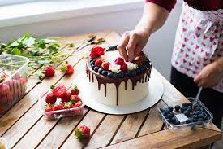

Era uma vez...Não, nada disso, isso não é um conto de fadas, apesar de ter doces dignos de princesas e principes!Mas, como na vida real nada vem com um toque de fada, vamos contar a realidade né!
Mas, pensando bem, para que ficar enrolando contando uma istoria (sim gente, istoria com i, porque não é nada tirado de um livro, é vida real, lembram), continuando, desculpe as vezes me perco nos pensamentos "kk" Tá, vou resumir.
Por necessidade financeira e por ter acabado de me mudar para outra cidade resolvi, testar vender algo e como um bolo é uma coisa mais facil (ta bom, pra mim, talvez pra você nao)enfim, eu tive a facilidade de fazer um bolo e ai, vi uma novidade que estava em alta, Bolos recheados dentro de um pote, fiz recheios, montei, e dei para a familia provar. Sabores aprovados, sai para vender nas lojas. E olha que legal, foi um sucesso. E hoje estamos com muito mais delicias.E é assim, que tudo começou!Nada de muito grande, so muito amor pelo que fazemos. Agora aprecie nossa vitrine e seja muito bem vindo!
